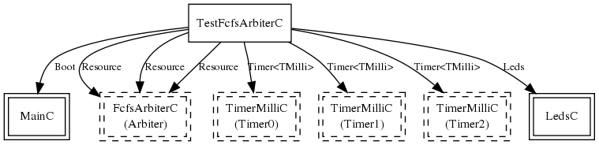

Please refer to TEP 108 for more information about the components
this application is used to test.
This application is used to test the functionality of the
FcfsArbiter component developed using the Resource
interface. Three Resource users are created and all three request
control of the resource before any one of them is granted it.
Once the first user is granted control of the resource, a timer
is set to allow this user to have control of it for a specific
amount of time. Once this timer expires, the resource is released
and then immediately requested again. Upon releasing the resource
control will be granted to the next user that has
requested it in FCFS order. Initial requests are made
by the three resource users in the following order
